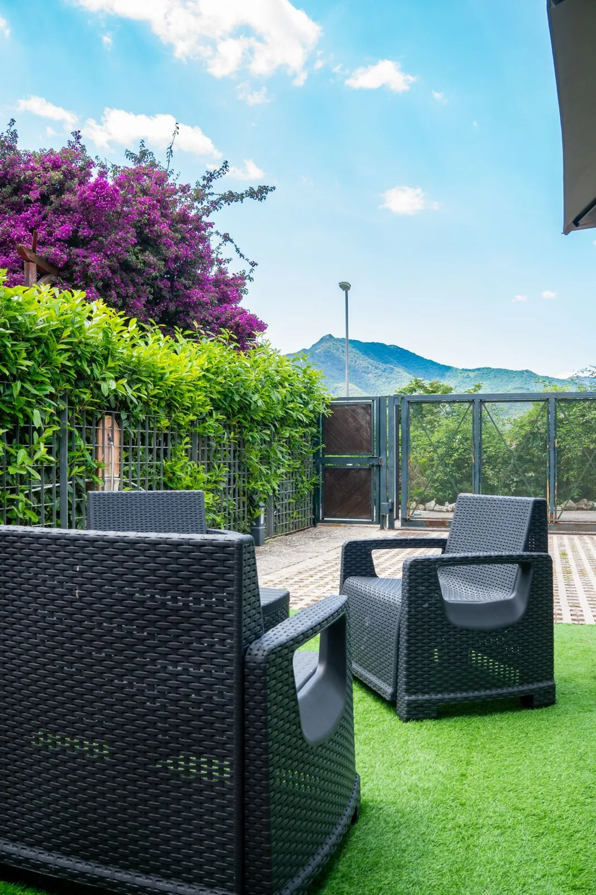

Zona più silenziosa, perfetta per riposare dopo una giornata lunga.
Una casa tutta tua
Fino a 6 ospiti
Giardino privato
Parcheggio gratuito
01 / Il piacere di rallentare
Fuori, la scoperta.
bedtime
Si dorme meglio
park
Giardino privato
lock
Privacy
Fuori, la scoperta.
Qui, la tua tranquillità.
A Casa di Marco è il vostro rifugio a Salerno: un intero alloggio con giardino privato, parcheggio interno e spazi comodi fino a 6 persone.
Dopo mare, centro e Costiera, qui si rientra in un posto più calmo, fresco e riservato: ideale per respirare, dormire bene e ripartire con più energia.
cottage Intero alloggio
groups Fino a 6 ospiti
bed 2 camere · 4 letti
shower 1 bagno
child_care 1 culla su richiesta
Uno spazio esterno riservato per staccare davvero.
Ingresso indipendente, calma e spazi tutti per voi.

02 / Spazi da vivere
Fai spazio ai bei momenti.
Camere, bagno, cucina, veranda e giardino: clicca su ogni spazio per vedere foto e dettagli.
Inclusa nel soggiorno
Salerno, come
Salerno, come
la viviamo noi.
Dove fermarsi a mangiare, cosa scoprire e le piccole informazioni che rendono tutto più semplice.
Abbiamo raccolto i nostri consigli in una guida digitale da portare con te, inclusa nel soggiorno.
La guida completa viene inviata agli ospiti.
Il tuo taccuino di soggiorno
Il bello,
qui intorno.
Comfort
Servizi e dotazioni
Le cose importanti, subito chiare.
Giardino privato
Spazio esterno esclusivo.
Parcheggio
Interno e gratuito.
Cucina
Attrezzata per pasti e colazioni.
Caffè
Espresso e moka.
Wi-Fi
Connessione inclusa.
Clima
Comfort nei mesi caldi.
Lavatrice
Utile per più giorni.
TV
Per momenti di relax.
Culla
Su richiesta, 1 disponibile.
Privacy
Ingresso indipendente.
Guida digitale
Consigli locali inclusi.
Colazione
Su richiesta.
Dove siamo
Tra città, costa e storia.
Dalla città alla costa, dai templi greci ai borghi della Costiera: a sinistra dove siamo, a destra le distanze in auto dalla casa.
Il mare
In estate il mare è vicino: spiagge e lungomare di Salerno, a un breve tragitto in auto.
directions_car 4,1 km · ~10 min in autoLuci d’Artista
In inverno il centro si accende con le Luci d’Artista: il percorso lungo Via Roma e il lungomare, da novembre a gennaio.
directions_car 4,1 km · ~9 min in autoCentro storico e lungomare
Il cuore di Salerno: via dei Mercanti, la cattedrale e il lungomare tra caffè, ristoranti e passeggiate.
directions_car 2,7 km · ~10 min in autoVietri sul Mare
La porta della Costiera, famosa per le ceramiche colorate e il centro storico affacciato sul mare.
directions_car 7,9 km · ~15 min in autoCostiera Amalfitana
Amalfi e Ravello, con i borghi sospesi tra montagna e mare, raggiungibili in auto.
directions_car 27,2 km · ~30 min in autoPaestum
I templi greci meglio conservati d'Italia e il museo archeologico, nella piana del Sele.
directions_car 39,3 km · ~55 min in autoPompei
L'area archeologica sepolta dall'eruzione del 79 d.C.: case, botteghe e affreschi ancora leggibili.
directions_car 32 km · ~35 min in autoCilento
Costa selvatica, paesi in pietra e Parco Nazionale: l'alternativa più tranquilla alla Costiera.
directions_car 67,5 km · ~80 min in auto
Galleria
Uno sguardo alla casa
Disponibilità
Quando vorresti venire?
Consulta le date libere e occupate, seleziona una data nel calendario e invia la richiesta.
Disponibilità
Calendario
Libera
Occupata
Passata
Caricamento disponibilità…
Le date occupate sono lette dal calendario collegato a Booking e Airbnb. Gli aggiornamenti possono non essere immediati: la disponibilità deve essere sempre confermata prima della prenotazione.
Da sapere
Informazioni utili
Arrivo e partenza
Arrivo indicativo dalle 15:00 alle 22:00. Partenza entro le 10:00.
Capienza
Massimo 6 ospiti. La culla è disponibile su richiesta e secondo disponibilità.
Colazione
La colazione non è inclusa nel prezzo, ma può essere richiesta con supplemento tramite bar convenzionato.
Tassa di soggiorno
Comune di Salerno: 3,00 € a notte per persona. I bambini sotto i 12 anni non pagano.
Codice struttura
CIN: IT065116C2KBNNPOHQ.
Guida e assistenza
Prima e durante il soggiorno ricevi supporto via WhatsApp e accesso alla guida digitale con consigli locali.
Recensioni
Cosa apprezzano gli ospiti
Le recensioni originali pubblicate dagli ospiti su Booking e Airbnb.
17 recensioni · Amato dagli ospiti · Superhost
15 recensioni · Wonderful
“Very nice hosts, cozy and quiet appartment outside the hustle and bustle of the city”
– Tobias, Svizzera · Booking“Wonderful and comfortable apartment with super helpful hosts who provide extra attention & quality services”
– Rowena, Australia · Booking“Very nice house with two bedrooms and lovely garden. There are all facilities that you need. We are feeling like at home.”
– Tijana, Serbia · Booking“On peut garer la voiture dans la cour, ce qui est très pratique. Endroit calme, sur les hauteurs de la ville de Salerne, avec vue sur la montagne.”
– Maria, Francia · Booking“Ci siamo sentiti come a casa, la host è stata gentilissima”
– Vincenzo, Italia · Booking“Abbiamo trascorso un piacevole soggiorno a casa di Marco. L'alloggio era perfetto, pulito e accogliente. Siamo stati accolti molto bene da Asja, che è stata anche sempre reattiva quando avevo una domanda. Piccolo extra: una guida da scaricare con un sacco di buoni indirizzi e idee. Raccomando questo alloggio. Grazie Asja per aver reso il nostro soggiorno così piacevole.”
– Laura · Airbnb“A Casa di Marco è un posto molto affascinante, lontano dalla trafficata Costiera Amalfitana. Tranquillo, silenzioso, con un bellissimo giardino in cui ci riposavamo ogni sera, caldo, piacevole con il suono dei grilli. La casa è molto ben attrezzata con tutto il necessario. Asja ci ha accolto calorosamente e ci ha fatto dei regali già all'ingresso. Nelle vicinanze ci sono molti negozi e ristoranti. Lo consigliamo a tutti e ne conserveremo un ricordo affettuoso.”
– Michal · Airbnb“Stefania e Asja sono due host fantastiche. Sempre disponibili. È la seconda volta che soggiorniamo in questa abitazione e sicuramente ci ritorneremo. Casa accogliente e riservata. Stefania è stata anche bravissima ed efficientissima a risolvere un guasto in casa, dimostrandosi anche molto professionale e attenta ai suoi ospiti. Come detto, ritorneremo. Grazie”
– Gregory · Airbnb“Un luogo dove ci si sente bene, lontano dai rumori della città. Tranquillità circondata da natura e fiori. Un luogo perfetto per visitare la costa. L'host è molto gentile, reattiva e discreta. Lo consigliamo al 100%.”
– Prisca · Airbnb
Contatti
Scrivici per il tuo soggiorno
Per una richiesta diretta, il modo più veloce è WhatsApp.